Psycholinguistisches Schülerlabor
Deutsches Seminar
Linguistik/Psycholinguistik
Lorenz Quast, Mengjie Guo & Fabian Schlotterbeck3. März '26

🕒 Zeitplan Vormittag
- 10:30 – 11:00
Ein psycholinguistisches Experiment - 11:00 – 11:30
Einführung in die Linguistik - 11:30 – 11:50
Einführung in die Psycholinguistik - 11:50 – 12:10
Hintergründe, Auswertung & Ausblick - 12:10 – 12:30
Vergleich zum Mandarin Chinesischen
🕒 Zeitplan Nachmittag
- 13:30 – 14:00
Ein psycholinguistisches Experiment - 14:00 – 14:30
Einführung in die Linguistik - 14:30 – 14:50
Einführung in die Psycholinguistik - 14:50 – 15:10
Hintergründe, Auswertung & Ausblick - 15:10 – 15:30
Vergleich zum Mandarin Chinesischen
Teil 1 – Was ist Linguistik?
Lernen Linguisten viele Sprachen?
Linguistik
lingua (Lat. „Sprache“)
vgl. auch bilingual („zweisprachig“)
Linguistik = Sprachwissenschaft
Und lernen Linguisten nun viele Sprachen?
Klare Antwort: Nein!
Was ist Linguistik?
Der Gegenstand der Linguistik ist das Wesen und der Gebrauch aller natürlichen Sprachen.
Was ist eine natürliche Sprache?
Eine natürliche Sprache ist eine Sprache, die von Kindern in ihrer vorgefundenen Umgebung ohne explizite Unterweisung gelernt wird.
Was ist Sprache?
Warum interessiert und fasziniert uns Sprache?
Nur der Mensch verfügt über dieses Mittel der Kommunikation.
Haben Tiere auch Sprachen?
- Bienentänze
- Starengesänge
- Wahlgesänge
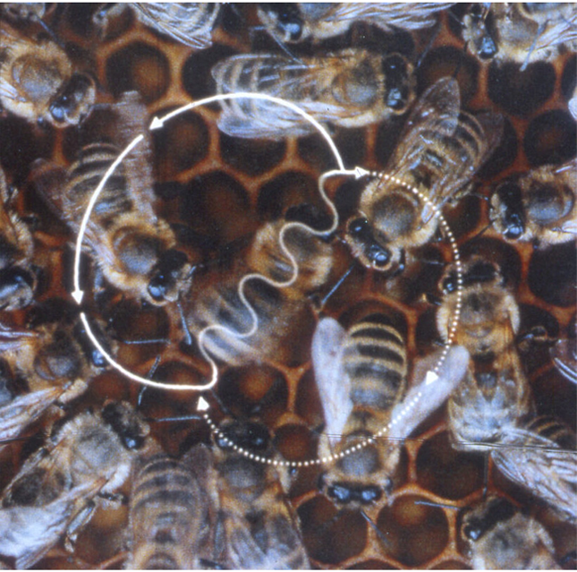
Eigenschaften natürlicher Sprachen
- Kreativ
- Linear und hierarchisch strukturiert (z.B. Stadttorwächter)
- Rekursiv (z.B. Stadttorwächterhaus, Stadttorwächterhaustür)
- Historisch veränderbar und situativ angepasst (frouwe → Frau)
Zielsetzungen
Das Reden über Sprache kann unterschiedliche Zielsetzungen haben:
|


|
Linguistik als Wissenschaft
Linguistik versteht sich – wie eine Naturwissenschaft – als empirische Wissenschaft, die auf Datenbeobachtung fußt.
Was ist Sprachwissenschaft?
- Sprachwissenschaft (oder Linguistik) ist das Studium natürlicher Sprache.
- Grammatik/Sprache ist regelgeleitete, strukturbezogene Laut-Bedeutungszuordnung.
- Die Linguistik beschreibt diese Einheiten und Regeln und sucht nach Erklärungen.
Module der Sprachforschung
Semantik
Pragmatik
Phonologie
Morphologie
Syntax
...
Semantik

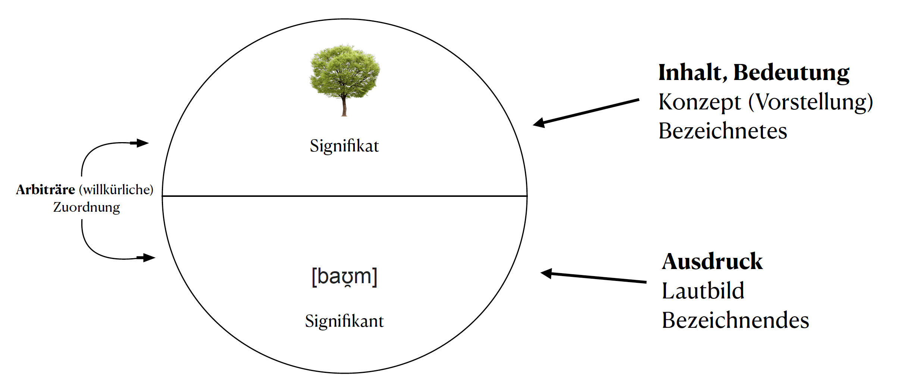

Herausforderungen
- Arbiträre Zuordnung von Zeichen zu Konzept: wauwau, kikeriki, knallen, klirren, rauschen ?
- Inhaltswörter vs. Funktionswörter: Sie isst die Pizza. -> Bedeutung von sie, die?
-
Wortbedeutung - Satzbedeutung - Kompositionalität:
Wie viele Sätze gibt es in einer Sprache? Unendlich viele?
→ Ihr lernt Sätze nicht auswendig.
→ Regeln erlauben uns, die Bedeutung eines Satzes systematisch zu bilden.
...
Semantik als Bedeutungslehre
Die Semantik beschäftigt sich mit der abstrakten Bedeutung einfacher und komplexer sprachlicher Ausdrücken für sich und in Äußerungskontexten.
Module der Sprachforschung
Semantik
Pragmatik
Phonologie
Morphologie
Syntax
...
Pragmatik
Pragmatik als Konversationslehre
Pragmatismus?
Der Pragmatik geht es um den handfesten Gebrauch von Sprache. Es geht um die Bedeutung in einem gegebenen Kontext.
Sie untersucht den kontextabhängigen kommunikativen Sinn.
Sprechakte
Welche Handlungen vollziehen wir mit Sprache?
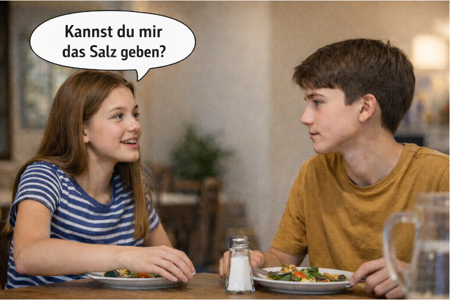
Hiermit erkläre ich Sie zu Eheleuten
Konversationsmaxime
Wir fassen uns gegenseitig als kooperativ auf.
Teilgebiete der Linguistik
Semantik
Pragmatik
Phonologie
Morphologie
Syntax
...
Phonologie
Phonologie als Lautlehre
In der Phonologie geht es um das System der Laute in einer Sprache.
- Phoneme: bedeutungsunterscheidende Lautsegmente
- Beispiele:
- Bett -- nett
- rot -- Rat
Vokaltrapez

Phonotaktik
Welche Lautfolgen sind in einer Sprache möglich?
Lgimf
Splute
Rtamma
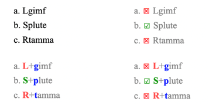
Module der Sprachforschung
Semantik
Pragmatik
Phonologie
Morphologie
Syntax
...
Morphologie
In der Morphologie geht es darum, wie Wörter sich zusammensetzen.
- sparsam, Sparsamkeit, aber *Sparkeit
- Teilbereiche der Morphologie:
- Wortbildung: Bildung von Wörtern aus Wörtern oder Wortbausteinen
- Flexion: Bildung von Wortformen

Module der Sprachforschung
Semantik
Pragmatik
Phonologie
Morphologie
Syntax
...
Syntax
Syntax untersucht, wie Wörter zu Wortgruppen bzw. Wortgruppen zu Sätzen zusammengefügt werden können.
Lisa schickt morgen das Paket an Hans nach Lüneburg. Lisa schickt das Paket morgen an Hans nach Lüneburg. Lisa schickt morgen nach Lüneburg das Paket an Hans. *Lisa schickt morgen nach Lüneburg das Paket Hans an. *Lisa schicken morgen nach Lüneburg das Paket an Hans.
Zur Syntax gehören...
- Abhängigkeitsbeziehungen, z.B. Subjekt, Objekte etc.
- Lineare Beziehungen: Wortstellung
- Hierarchische Beziehungen: Konstituenten („Schachtel-in-Schachtel-Struktur“)

Teil 2: Psycholinguistik?
Psycholinguistics is...
the scientific discipline that studies how people acquire a language and how they comprehend and produce this language. (Kalbunde, 2001)
the discipline that investigates and describes the psychological processes that make it possible for humans to master and use language. (Ratner & Gleason, 2004)
mainly concerned with the mechanisms by which language is processed and represented in the mind and brain; that is, the psychological and neurobiological factors that enable humans to acquire, use, comprehend, and produce language. (Wikipedia)
Scientific Method

Fragen der Psycholinguistik
- Wie wird sprachliches Wissen erworben?
- Wie wird Sprache verstanden?
- Wie wird Sprache produziert?
- Was passiert beim Verlust der Sprachfähigkeit?
Language Areas in the brain
The MUC model

- Memory (yellow, including Wernicke's area)
- Unification (blue, including Broca area)
- Control (pink, including further parts of frontal lobe)
(Hagoort, 2005)
Language Areas in the brain
The MUC model
- Memory
- Unification
- Control
Language Areas in the brain
The MUC model
-
Memory
Gespeichertes sprachliches Wissen (Wörter, Grammatik, Bedeutungen) -
Unification
Wir integrieren Wörter zu sinnvollen Sätzen -
Control
Aufmerksamkeit & Konfliktlösung steuern den Prozess
Sprachverstehen als Zusammenspiel aus Wissen, Integration und Kontrolle
Marrs (1982) drei Ebenen
der Analyse von Informationsverarbeitungssystemen
- Computational level:
Was wird berechnet? - Algorithmic level:
Wie verläuft die Berechnung? - Implementation level:
Wie ist sie physikalisch realisiert?
Wie kommt man zu einer psycholinguistischen Theorie?
Rational Analysis
(Anderson, 1990)
- Menschliches Denken & Handeln ist optimal an die Umwelt angepasst.
- Fokus: Wie können wir mit begrenzten Ressourcen (Zeit, Energie, Gedächtnis, Aufmerksamkeit ...) möglichst effizient handeln?
- Vergleich : „Was wäre rational?“ vs. „Wie verhalten sich Menschen tatsächlich?“
Vorgehen
-
Ziele definieren
→ Welche Aufgaben soll das kognitive System erfüllen? -
Umweltstruktur analysieren
→ Welche Regularitäten gibt es (z. B. Wahrscheinlichkeiten, Kausalität)? -
Begrenzungen berücksichtigen
→ Welche Ressourcen sind beschränkt (z. B. Gedächtnis, Aufmerksamkeit)? -
Optimale Anpassung aus 1.$-$3. herleiten
→ Wie müsste ein rational angepasstes System in dieser Umwelt handeln? -
Empirischer Abgleich
→ Stimmen die Vorhersagen aus 4. mit menschlichem Verhalten überein?
Beispiel: Wortabruf

Beispiel: Wortabruf

Beispiel: Wortabruf
- Aufgabe: Vervollständige folgende Satzanfänge
- „The boy went outside to fly a...“
(DeLong, Urbach & Kutas, 2005)
- „Landing planes...“
- „If you walk too near the runway, landing planes...“
- „If you have been trained as a pilot, landing planes...“
(Tyler & Marslen-Wilson, 1977)
- „The boy went outside to fly a...“
(DeLong, Urbach & Kutas, 2005) - „Landing planes...“
- „If you walk too near the runway, landing planes...“
- „If you have been trained as a pilot, landing planes...“
(Tyler & Marslen-Wilson, 1977)
Beispiel: Wortabruf

Beispiel: Wortabruf
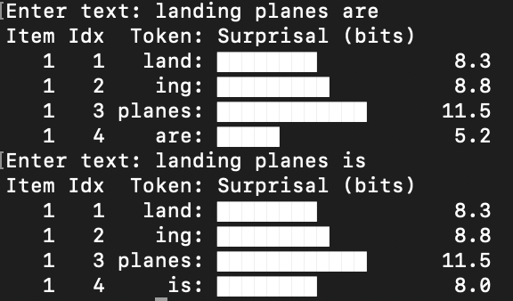
Beispiel: Wortabruf

Beispiel: Wortabruf
- Herausforderung:
zehntausende Wörter im Kopf – trotzdem schnell abrufen - Rational Analysis erklärt:
- Frequenz-Effekt: Häufige Wörter sind schneller abrufbar als seltene
- Kontext-Effekt: Kontextuell passende Wörter sind leichter verfügbar
- Ergebnis:
Sprache läuft flüssig und effizient
Psycholinguistische Methoden
- Urteile über
- Akzeptabilität
- Grammatikalität
- Wahrheitswerte
- Schlussfolgerungen
- ...
- Fortsetzungsauswahl
- Freie Produktion
- ...
- Event-related Potentials (ERP mittels EEG)
- MEG
- fMRI
- Eyetracking (Visual World, Reading)
- Self-paced reading
- A-Maze
- ...
ERPs

Eyetracking
Erwartung und Prädiktion in der Psycholinguistik
N400
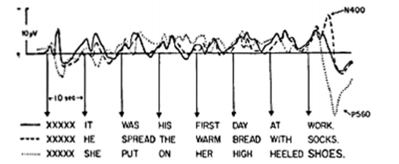
(Kutas & Hillyard, 1980)
Surprisal theory
(Levy, 2008; Hale, 2001)
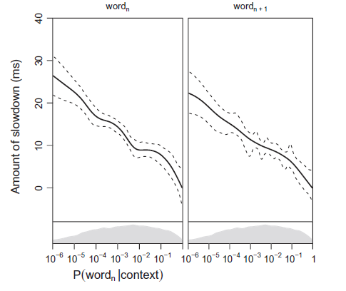
- Verabeitungsschwierigkeit (z.B. Lesezeit aber auch N400 amplitude) proportional zu Informationsgehalt, aka Surprisal (Smith & Levy, 2013)
Causal Bottleneck
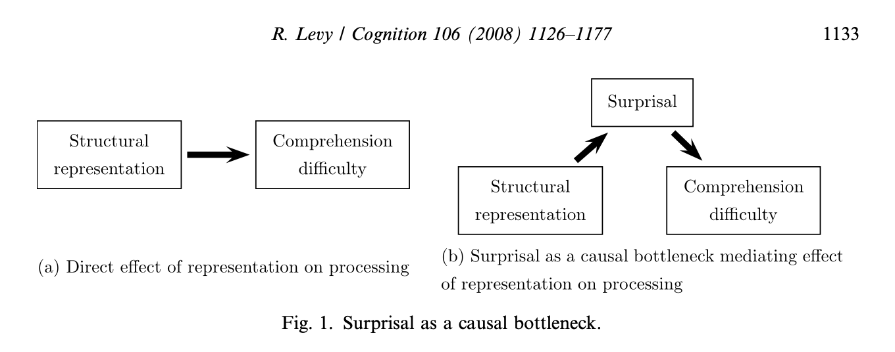
(Mittlerweile empirisch kaum noch haltbar)
...und in Large Language Models (LLMs) wie GPT5
LLMs nutzen künstliche neuronale Netze Transformer Architektur um nächstes Wort vorherzusagen
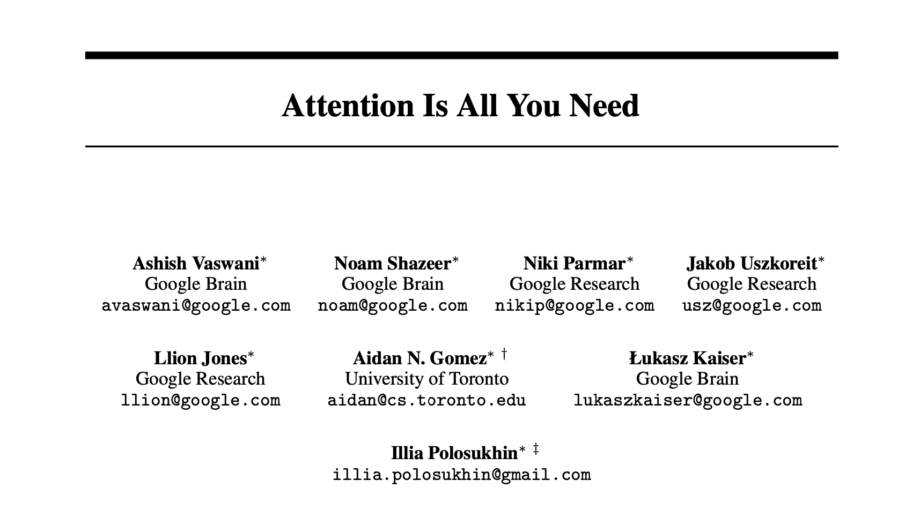
Dass dies gut funktioniert, ist aus psycholinguistischer Perspektive nicht allzu erstaunlich
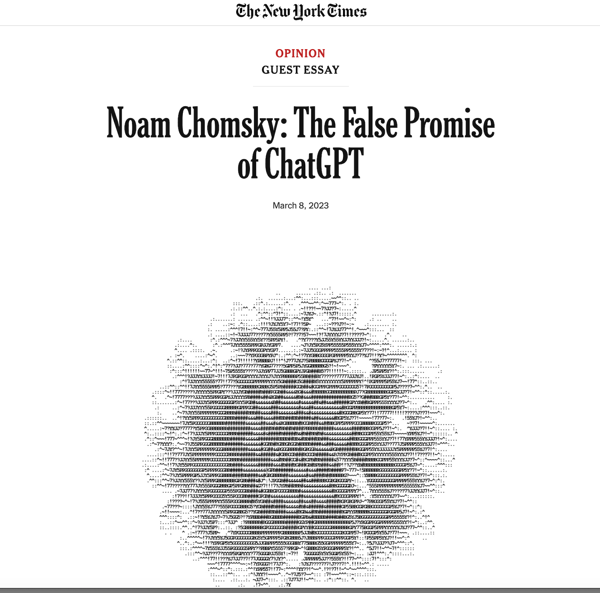
Teil 3: Experiment zu erwartungswidrigen Fokuspartikeln
Einführung
- Fokuspartikeln:
A focus particle is a particle that accompanies an element that is focused and that expresses various meanings related to the focusing [😀] (Glottopedia)
Partikeln, die [...] bestimmte Elemente eines Satzes [hervorheben]. Zusammen mit deren [fokussierten] Bezugsausdruck bilden sie den Informationskern des Satzes. Weglassen [...] verändert nicht die grammatische Richtigkeit [...] aber die Bedeutung des Satzes. (Dimroth, 2004)
- Bekannte Gruppen: restriktive, additive und (hybride)
skalare Fokuspartikeln
allein, auch, auch nur, ausgerechnet, ausschließlich, bereits, besonders, bloß, einzig, eben, ebenfalls, erst, gar, genau, geschweige denn, gerade, gleich, gleichfalls, insbesondere, lediglich, (nicht) einmal, noch, nur, schon, selbst, sogar, vor allem, wenigstens, zumal, zumindest (König 1991)
- Restriktive Fokuspartikeln (z.B. nur, ausschließlich)
| Jörg | ||
| Nur | Fabian | hält einen Vortrag über Fokuspartikeln |
| Mascha |
- Additive Fokuspartikeln (z.B. auch, ebenfalls)
| Emma | ||
| Auch | Mengjie | hält einen Vortrag über Fokuspartikeln |
| Fabian |
- Es gibt aber auch Fokuspartikeln, die sich nicht klar einer dieser beiden Gruppen zuordnen lassen (ausgerechnet, gerade, eben, genau)
Vorschlag
Erwartungswidrige Fokuspartikeln
(ausgerechnet, gerade, eben, genau)
„Die erwartungswidrigen Fokuspartikeln heben die Unwahrscheinlichkeit des Bezugsausdrucks in Relation zu allen möglichen Alternativen hervor, indem er als (sehr) unerwartet bestimmt wird.“
Experiment
Experimentelles Design
Kontext Typ I (medium expectancy)
Peter ist nicht gut in der Schule. Besonders Mathe fällt ihm schwer. Trotz ständiger Nachhilfe kommt er nicht mit den anderen mit. Letzte Woche haben die Schüler eine Matheprüfung geschrieben. In der heutigen Stunde wurden die Prüfungen dann endlich zurückgegeben.
Target-Satz
- Peter...
- Nur Peter...
- Ausgerechnet Peter...
Experimentelles Design
Kontext Typ II (high expectancy)
Peter ist in der 8. Klasse. Seit letzter Woche ist die Aufregung unter den Schülern groß, weil sie eine Matheprüfung geschrieben und seither gespannt auf die Ergebnisse gewartet haben. In der heutigen Stunde wurden die Prüfungen dann endlich zurückgegeben.
Target-Satz
- Peter...
- Nur Peter...
- Ausgerechnet Peter...
Hypothesen und Vorhersagen
- Restriktive und additive (RA) Fokuspartikeln folgen den Diskurserwartungen, wie bei Abwesenheit (OH) von Partikeln
- RA und OH verhalten sich ähnlich
- Erwartungswidrige (EW) Partikeln lizensieren Foretzungen, die an sich unerwartet sind
- EW verhalten sich anders als OH/RA und reagieren entgegengesetzt auf Manipulation der kontextuellen Erwartung
Teil 3: Ergebnisse
MA-Arbeit
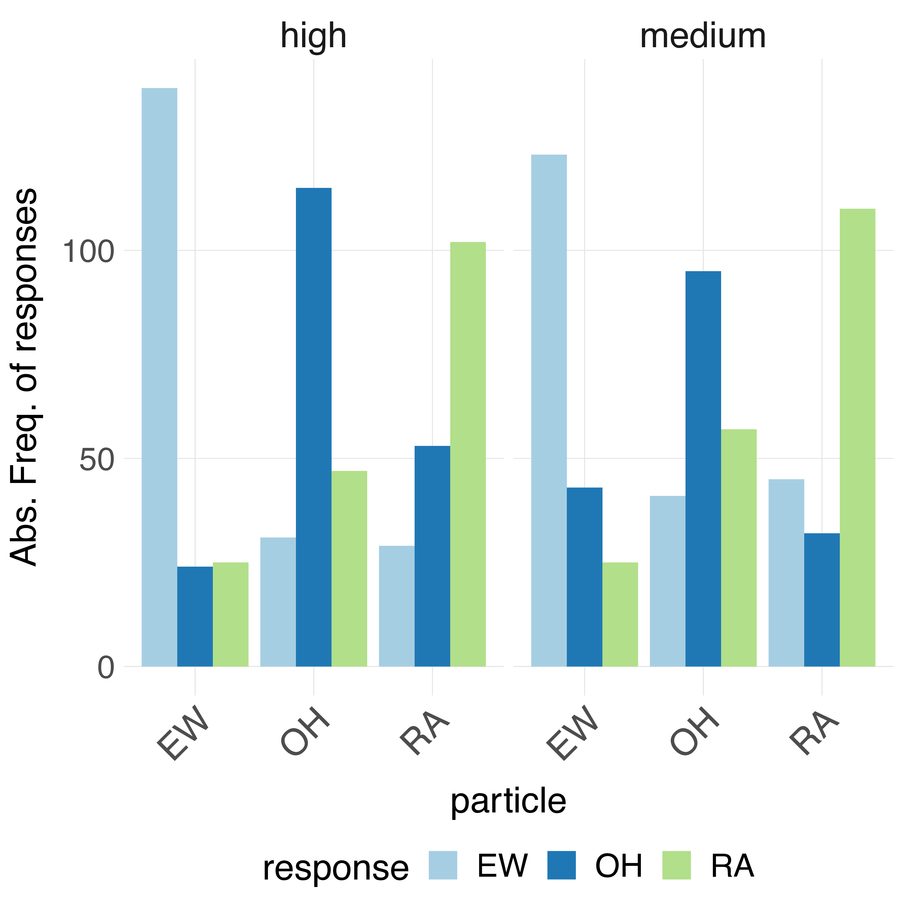
Frühere Schüler*innenlabore

Heutiges Schüler*innenlabor
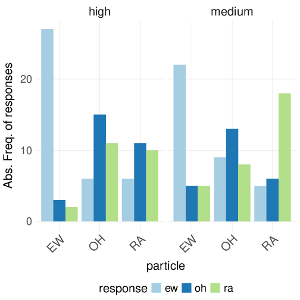
Ausblick: Simulation mit LLM zur weiteren Analyse
Könnte interessant sein, da Fortsetzungen mit erwartungswidrigen Fokuspartikeln schwer vorherzusagen und somit herausfordernd für LLMs sein könnten
In einem Digital Humanities Seminar haben wir LLMs genutzt, um menschliche Daten zu simulieren und zu analysieren
Zum Beispiel: Paarweise Ähnlichkeiten zwischen Bedingungen

Starke Korrelation zwischen GPT 3.5, GPT 4 und menschlichen Produktionen
Nächste Schritte
- Auswahl von Fortsetzungen (was ihr gemacht habt) vorhersagen :
- Mittels Ähnlichkeiten zwischen Fortsetzungen im Kontext
- Mittels Wahrscheinlichkeiten von Fortsetzungen
Mensch-Maschine Quiz des Sonderforschungsbereichs zu sprachlicher Kreativität in Bielefeld